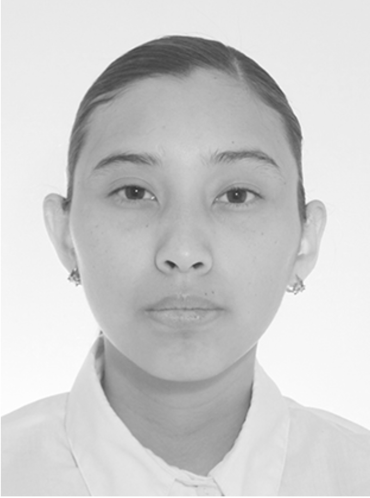

Hola, soy Elizabeth Montes de Oca

Soy una profesional técnica en contabilidad con una pasión por los números y las finanzas. Desde siempre, he encontrado satisfacción en el mundo de las cifras y la gestión financiera, lo que me llevó a emprender una carrera en este campo. Actualmente, me encuentro persiguiendo una licenciatura en actuaria, una disciplina que combina matemáticas y estadísticas para tomar decisiones informadas en el mundo de los seguros y las inversiones. La música también ocupa un lugar en mi tiempo libre, lo que me proporciona un equilibrio perfecto entre la lógica de los números y la expresión artística. Además, tengo planes emocionantes para el futuro, ya que próximamente comenzaré a estudiar administración financiera. Esta combinación de habilidades y pasiones me ha llevado a tener crecimiento profesional.
Desarrollo Web
Tengo conocimientos básicos, pero aprendo de forma rápida, aprendi en un bootstrap de Tecnolochicas Pro, y se darle solución a los problemas que se presenten en el código al momento de estar creando la página web y me gusta el diseño que se le puede dar a las creaciones de las páginas.
Tecnica en contabilidad
Tuve la fortuna de trabajar y conocer la contabilidad en un despacho contable durante un corto plazo (2 meses), lo cual aprendi a realizar los informes fiscales.
Estudiante
Actualmente me encuentro estudiando la carrera de Actuaría pero próximamente comenzaré un nuevo viaje en mi vida con la licenciatura en administración empresarial.

Elizabeth muestra un rápido progreso en la adquisición de habilidades técnicas clave y una gran disposición para colaborar en proyectos. Su actitud positiva y su voluntad de aprender constantemente son cualidades valiosas en el campo de la programación. No tengo dudas de que Elizabeth seguirá creciendo y haciendo contribuciones significativas como desarrolladora frontend en el futuro.
Anel
Gerente de proyectos en DesarrolloWeb

Elizabeth a adquirido y mostrado habilidades técnicas, una gran disposición para colaborar en proyectos. y Sus cualidades valiosas en el campo de la programación y como excelente compañera . No tengo dudas de que Elizabeth seguirá creciendo y haciendo contribuciones significativas como desarrolladora frontend en el futuro.
Kary
Gerente de DiseñaMiPáginaWeb

El compromiso y responsabilidad son solo algunas de las habilidades que Elizabeth, posee. Sin duda alguna la toma de riesgos y responsabilidades ha caracterizado al colaborador diariamente, he sido apoyo y complice del crecimeinto profesional y personal permitiendome así acompañar y compartir expriencias para la mejora continua.
Monica
Directora de AprendeAProgramar